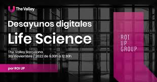

Máster en Digital Product Management
Innova, lidera y hackea el crecimiento de productos digitales
El Product Manager es la clave para liderar la estrategia
de productos digitales: su concepción, desarrollo y crecimiento trabajando
con su equipo de desarrolladores, UX y Data para tomar las mejores
decisiones de producto.
A través de esta experiencia formativa única articulada en torno a proyectos y retos
prácticos aprenderás a aplicar las metodologías y herramientas usadas por las startups tecnológicas
líderes para transformarte en un auténtico líder de productos digitales.
Posiciones profesionales relacionadas:Product manager, Product designer, Consultor de negocio.
Desarrollo web
Innova, lidera y hackea el crecimiento de productos digitales
100% enfocado a la empleabilidad: 6 semanas dedicadas a practicar intensamente desarrollando 3 proyectos, con un proyecto final real
sponsorizado por una empresa, y co-creado con empresas tecnológicas.
Posiciones profesionales relacionadas:Product manager, Product designer, Consultor de negocio.

Impact MBA
Fórmate para ser parte activa del cambio de eras
Conviértete en un profesional flexible, capacitado para adaptarse al cambio gracias al desarrollo de conocimientos, competencias y
herramientas que las empresas reclaman. Con foco en las posibilidades que las tecnologías disruptivas ofrecen y su aplicación en el mundo
de los negocios, buscando siempre el impacto positivo en la sociedad. Desarrollarás una orientación humanista y ética, dirigida a una realidad
cada vez más tecnologizada para ser capaz de emprender un proyecto desde el día inicio y hacerlo realidad.
Posiciones profesionales relacionadas:Jefe de proyecto